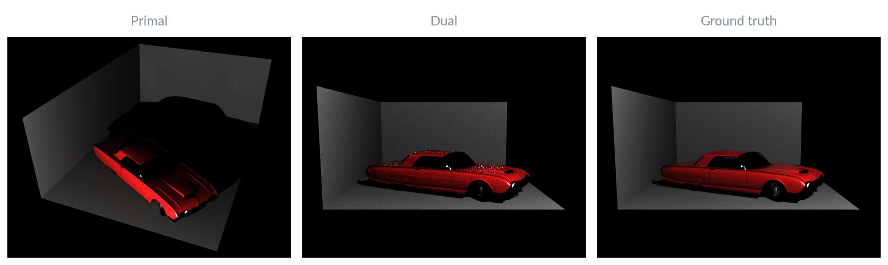

Lights Are Secretly CamerasSimulating Dual Photography in Mitsuba 3
MIT 6.4400 Computer GraphicsTop 5 of 44 final projects
In computer graphics, we typically consider lights and cameras to be fundamentally different objects. Lights emit light rays into a scene; those rays interact with the scene until they reach a camera’s sensor, where they are measured and turned into an image. In our project, we show that lights and cameras are actually not so different after all. Particularly, through the method of Dual Photography [1], we demonstrate that we can use a camera as a light, and a light as a camera.
As shown in Figure 1, we set up a simple scene which is flood-illuminated from the bottom left by a projector light and imaged from the top right by a camera. We refer to this view of the scene as the primal image, which is easily obtained by raytracing the scene. We show that it is possible to reverse the flow of light from projector to camera, and accordingly to generate a photorealistic image of the scene from the perspective of the projector, as if the illumination came from the position of the camera. This is the dual image. Surprisingly, this dual image is not physically rendered, and we can generate it without physically moving the light or the camera.
Light transport
Figure 2 illustrates the key concepts of light transport and Helmholtz reciprocity. We use a projector of resolution $h_p \times w_p$ and camera of resolution $h_c \times w_c$. Between every pixel of the projector and every pixel of the camera, there exists light transport, the amount to which the brightness of that camera pixel depends on the illumination from that projector pixel.
We refer to the light flow from projector pixel $i$ to camera pixel $j$ in the primal image as the forward path, since it proceeds from the light to the camera. Helmholtz reciprocity tells us that the light transport along the forward path is equivalent to the light transport along a hypothetical reciprocal path, one which starts at the camera pixel $j$ and proceeds in reverse to the projector pixel $i$.
If we reverse all pairwise light transports in this way, we essentially replace the camera with a virtual projector, and the projector with a virtual camera. In practice, we record the pairwise light transport values in a matrix $\mathbf{T}$, which implicitly represents a 4D light transport function (a 2D pixel → 2D pixel mapping). To use a matrix here, we unroll images into 1D vectors (and can later roll them back). In the rest of this section, we consider images to be these unrolled vectors.
$\mathbf{T}$ is structured such that $\mathbf{T}[j, i]$ is the light transport between projector pixel $i$ and camera pixel $j$. This makes $\mathbf{T}$ an $(h_c \times w_c) \times (h_p \times w_p)$ matrix. In the primal case, $\mathbf{c} = \mathbf{T}\mathbf{p}$; that is, the projector illumination pattern $\mathbf{p}$ is transported by $\mathbf{T}$ to form the camera’s image, $\mathbf{c}$. Reciprocity allows us to virtually illuminate the camera’s pixels as $\mathbf{c}'$, and $\mathbf{T}^\top$ transports this virtual illumination back to the perspective of the projector, forming the dual image $\mathbf{p}'$. The right side of Figure 2 illustrates this reversal.
Adaptive multiplexing
The simplest approach to measuring $\mathbf{T}$ is a brute-force scan, where we iterate over all pixels in the projector, illuminate the scene with only the one chosen pixel, and then write the camera’s response into a corresponding column of $\mathbf{T}$. We implement this in Mitsuba 3 [2] with 4096 spp, successfully producing dual images at low resolutions (128 × 128 for both camera and projector). However, the time to acquire $\mathbf{T}$ grows quartically as we increase the projector and camera’s resolutions.
Adaptive multiplexing [1] allows us to capture the light transport much faster; for this scene, as shown in Figure 3, we observe a speedup of roughly 340×. The fundamental idea is that there exist projector pixels whose contributions onto the scene are independent of each other. Thus, we can light up these independent pixels simultaneously, greatly parallelizing the acquisition process. We find that adaptive multiplexing produces much better results than a similar method called fixed-pattern scanning, since adaptive multiplexing can resolve collisions (multiple illumination pixels mapping to the same camera pixel).
The algorithm begins with the entire projector illuminated at once and then recursively subdivides the grid into fourths. Each one of these projector blocks is then illuminated in sequence—this constitutes a “round” of illumination—and we maintain a conflict graph $C_k = \{(B_i, B_j) : B_i, B_j \in B_k \text{ light a common camera pixel}\}$, where $B_k$ is the set of blocks in round $k$. We can then run a graph coloring algorithm over $C_k$ that determines the subsets of $B_k$ that can be illuminated in parallel during the next round. Because $C_k$ records which blocks cannot be disentangled and no two neighboring blocks in $C_k$ will share a color, this process maximally parallelizes the illumination process for the next round. We continue subdividing until we reach the pixel level, at which point we can directly observe camera images and form the column vectors of $\mathbf{T}$. We maintain a lookup table between projector blocks and camera pixels one level up in the recursive process on any given round, which is used to identify and prune blocks that have no contribution to the camera. This can greatly accelerate the acquisition process.
Dual image

Figure 4 illustrates that Helmholtz reciprocity and adaptive multiplexing put together allow us to more scalably compute dual images (here, 512 × 512). The result is very similar to a ground truth dual image, which is rendered with the camera and projector physically swapped. Speckles and some loss of ambient lighting are artifacts of raytracing in simulation. At 128 × 128 resolution, the maximum feasible for brute force acquisition, adaptive multiplexing achieves comparable quality to brute force.
Relighting
Since the full light transport information is disentangled and recorded in $\mathbf{T}$, we can relight the scene by effectively shining custom patterns from the camera's position. Two examples are shown in Figure 5. The relit dual images respond in physically consistent ways under the new lighting. This is despite the fact that they are generated with no raytracing, nor with an actual camera present at the viewpoint, nor with an actual light in the location that one appears to be.
Conclusion
At the beginning of this project, we aimed to interchange the roles of lights and cameras, taking pictures from a light’s perspective, illuminated from the location of a camera. By efficiently measuring light transport and reversing it, our simulation of dual photography achieves this result and the interesting properties that come with it.